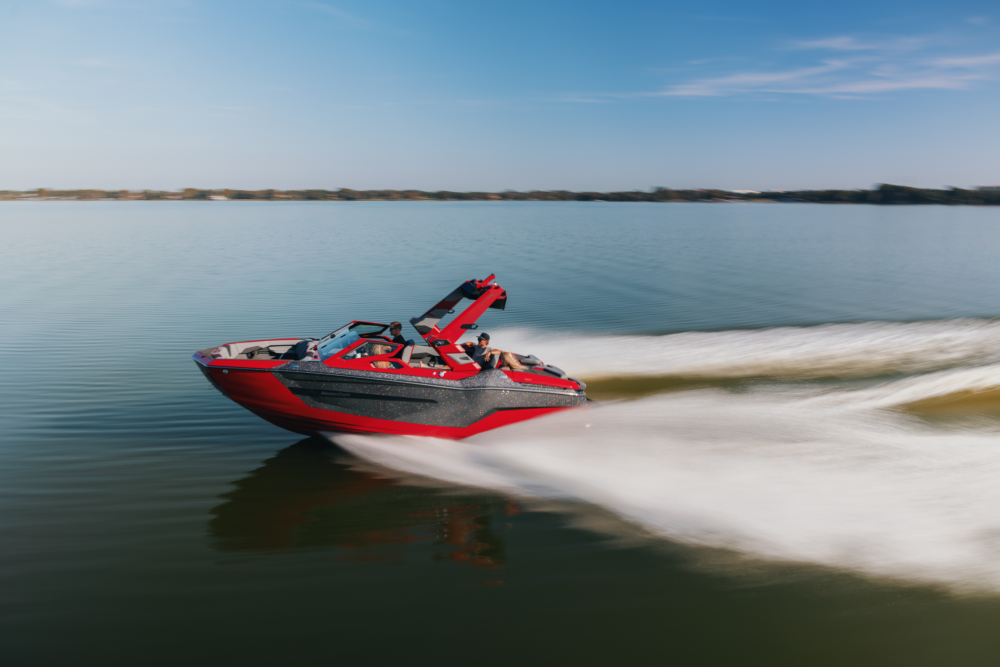

Tilly's World

Authorized MasterCraft Dealer · Riverside · Woodland Hills · Norco, California
Since 1968, MasterCraft has defined what a surf boat, wake boat, and tow sport vessel should be. As an authorized dealer, Tilly's Marine brings the complete MasterCraft lineup to Southern California.
Our Partnership
Tilly's Marine has been Southern California's trusted MasterCraft dealer for decades — and that relationship is built on a shared commitment to performance, craftsmanship, and the people who live for the water. As an authorized MasterCraft dealer serving Riverside, Woodland Hills, and Norco, we carry the full lineup of MasterCraft surf boats, wake boats, and tow sport vessels.
What sets MasterCraft apart is what sets Tilly's Marine apart: an uncompromising standard. Every boat in our showroom is backed by the MasterCraft factory warranty, and our factory-certified technicians are trained to service every model we sell. When you buy a MasterCraft at Tilly's Marine, you're not just buying a boat — you're joining a community supported by one of the best dealer networks in the country.
Whether you're looking for the competition-proven X Series, the versatile XT Series, the entry-level NXT Series, or the legendary ProStar slalom boat, our team has the expertise and inventory to match you with the right vessel for your riding style, budget, and lifestyle.
The Lineup

The Pinnacle of Performance
MasterCraft's flagship lineup — the X Series is built for surf and wake riders who demand nothing but the best. With Gen2 6.2L engines, the industry-leading Surf Gate technology, and a hull designed around performance, every X Series boat delivers competition-grade waves and wakes straight from the factory.
Available Models
Industry-leading surf wave shaping system. Switch sides on the fly without stopping.
MasterCraft's next-generation direct injection engine delivers more torque, better fuel economy, and exceptional reliability.
Factory-plumbed ballast fills automatically so you spend more time riding and less time waiting.
Every new MasterCraft sold through Tilly's Marine is backed by the full MasterCraft factory warranty and nationwide dealer network.
1968
Year Founded
55+
Years of Innovation
4
Model Series
3
SoCal Locations
Feel the Difference
Nothing sells a MasterCraft like being on one. Book a demo day and let the boat speak for itself — our team takes you out on the water at any of our three SoCal locations.
Book Your Demo DriveCommon Questions
Everything you need to know about buying a MasterCraft through Tilly's Marine in Southern California.
Contact Our Team →Tilly's Marine is your authorized MasterCraft dealer with three locations — Riverside, Woodland Hills, and Norco. Stop by any showroom or browse our inventory online.
The X Series is MasterCraft's flagship performance lineup, while the XT Series offers the same premium build with versatile family-friendly layouts at a more accessible price point.
The X Series and XT Series, equipped with Surf Gate and integrated ballast, produce competition-grade surf waves. Our team will match a model to how you ride.
Yes. Our finance team works with top marine lenders to secure competitive rates and fast approvals so you can get on the water sooner.
Absolutely. Book a demo day at any of our three locations and our team will take you out on the water to experience the boat firsthand.
Yes. Our factory-certified technicians service every MasterCraft model we sell, from routine maintenance to major repairs, at all three Southern California locations.
Find Us
Location 02
22880 Ventura Blvd, Woodland Hills, CA 91364
(818) 555-0200 Get Directions →